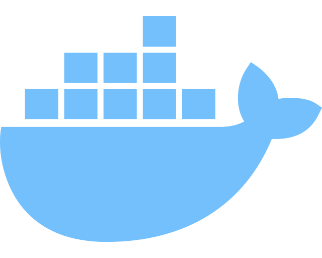
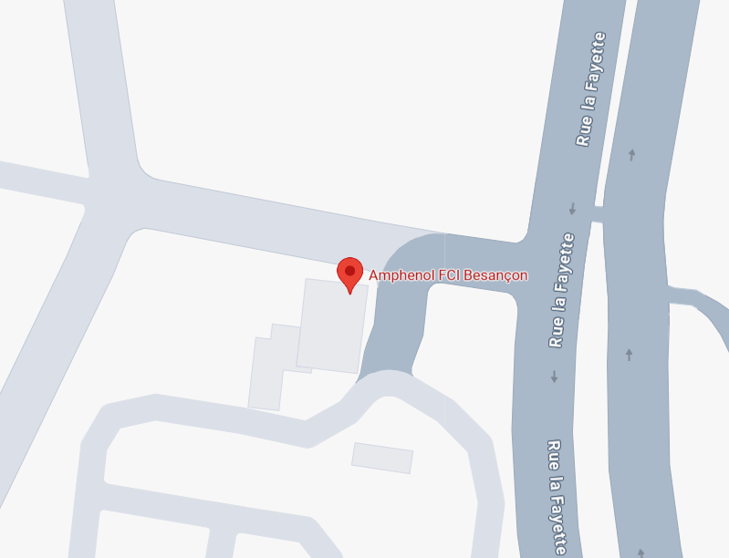
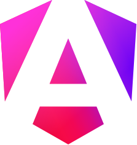
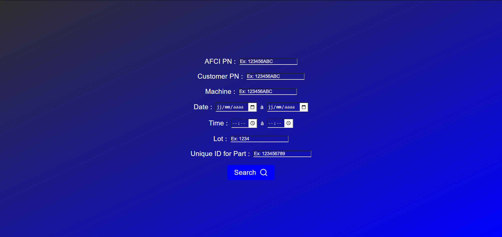

Club Arcade


Technologies utilisées

Technologies utilisées


Technologies utilisées





C:\Users\Teste\projet>npm install -g @angular/cli
changed 274 packages in 25s
52 packages are looking for funding
run `npm fund` for details
C:\Users\Teste\projet>ng new
√ What name would you like to use for the new workspace and initial project? projet
√ Which stylesheet format would you like to use? Sass (SCSS)
√ Do you want to enable Server-Side Rendering (SSR) and Static Site Generation (SSG/Prerendering)? No
C:\Users\Teste\projet>npm init -y
Wrote to C:\Users\Teste\projet\package.json:
{
"name": "projet",
"version": "1.0.0",
"description": "",
"main": "index.js",
"scripts": {
"test": "echo \"Error: no test specified\" && exit 1"
},
"keywords": [],
"author": "",
"license": "ISC"
}
docker run --name nom_du_container -e MYSQL_ROOT_PASSWORD=mot_de_passe -e MYSQL_DATABASE=nom_de_la_base -p 3306:3306 -d mysql:latest
import express from "express";
import express from "express";
const app = express();
const port = 3000;
import express from "express";
const app = express();
const port = 3000;
app.get("/hello", (req, res) => {
res.send("Hello World!");
});
import express from "express";
const app = express();
const port = 3000;
app.get("/hello", (req, res) => {
res.send("Hello World!");
});
app.listen(port, () => {
console.log(`Le serveur a démaré sur le port ${port}`);
});
import express from "express";
const app = express();
const port = 3000;
app.get("/hello", (req, res) => {
res.send("Hello World!");
});
app.listen(port, () => {
console.log(`Le serveur a démaré sur le port ${port}`);
});